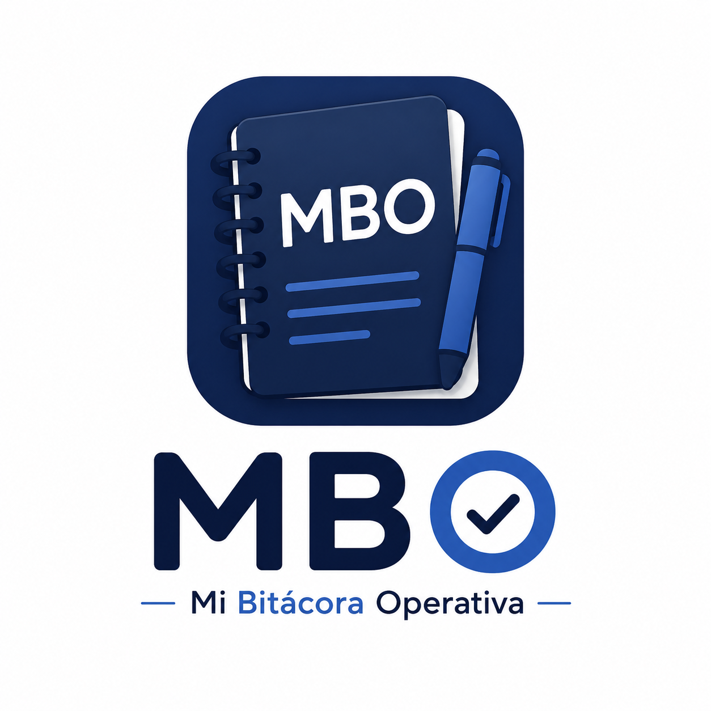
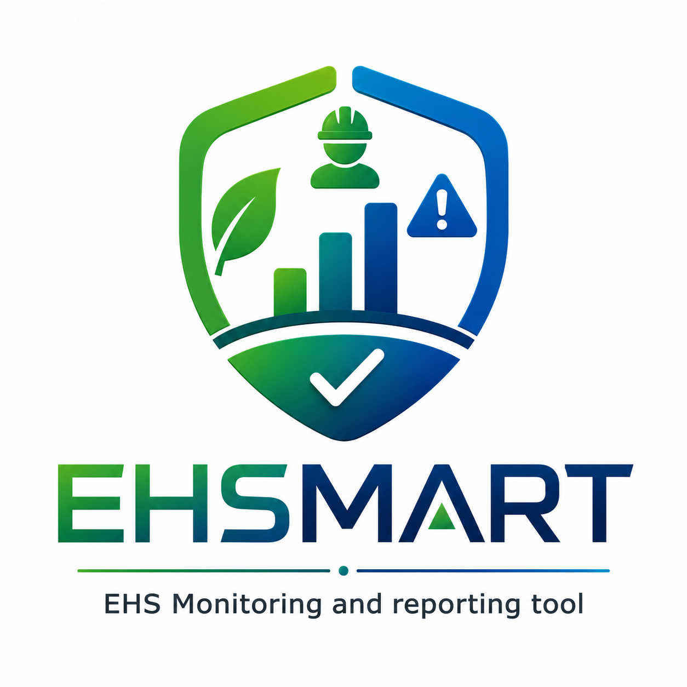
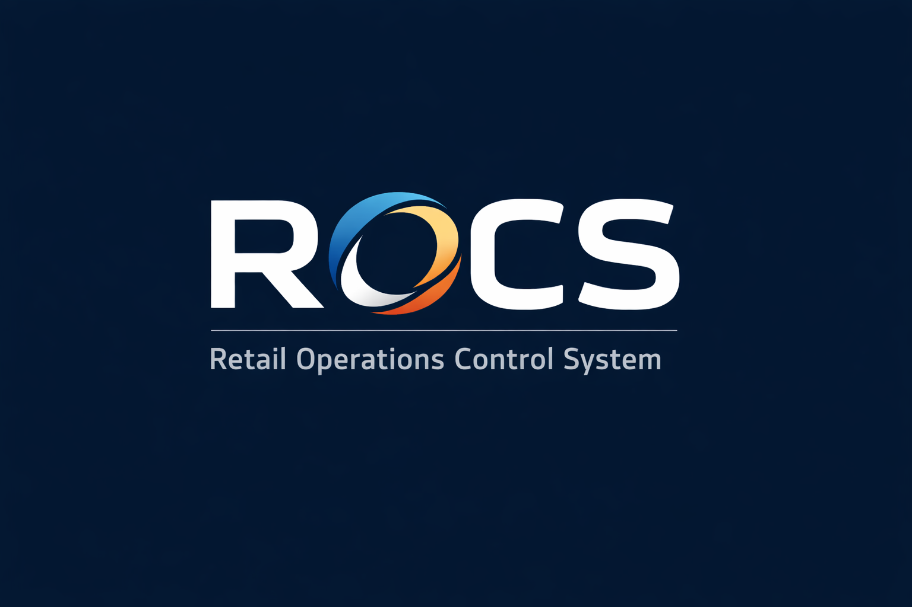

01
DAP Suites
Soluciones listas para implementar en operaciones empresariales, personal en campo, EHS, calidad y control operativo.
Software empresarial · Automatización · Inteligencia Artificial
En DAP desarrollamos soluciones tecnológicas para capturar información en campo, administrarla desde la nube y convertirla en datos estratégicos para la toma de decisiones.
Soluciones listas para implementar.
Plataformas web y apps a la medida.
Análisis, tendencias y modelos predictivos.
Quiénes somos
En DAP desarrollamos soluciones tecnológicas orientadas a la digitalización, automatización y análisis de procesos empresariales.
Nuestra experiencia combina conocimiento operativo, desarrollo de software e Inteligencia Artificial para crear plataformas que permiten capturar información en campo, administrarla desde la nube y convertirla en información estratégica.
Servicios
Desde soluciones listas para implementar hasta plataformas desarrolladas completamente a la medida.
Soluciones listas para implementar en operaciones empresariales, personal en campo, EHS, calidad y control operativo.
Diseño de plataformas web, apps móviles, portales de consulta, dashboards y módulos personalizados para cada proceso.
Implementación de análisis con IA para detectar tendencias, comportamientos, riesgos, patrones y oportunidades de mejora.
Desarrollos

Mi Bitácora Operativa
App móvil y plataforma web para asistencia, actividades en campo, vehículos, combustible, vacaciones, viajes, evidencias y operación diaria.

EHS Monitoring and Reporting Tool
Suite para seguridad, salud y medio ambiente: hallazgos, incidentes, permisos, recorridos, evidencias y seguimiento normativo.

Registro Operativo y Control de Servicios
Plataforma para control de servicios, proyectos, contratistas, evidencias, avances, documentación y seguimiento de actividades.
IA Analytics
Integramos Inteligencia Artificial para consultar información, detectar patrones, generar prospecciones, resumir reportes y apoyar la toma de decisiones.
Identifica comportamientos futuros con base en registros históricos.
Visualiza indicadores, riesgos, avances, proyectos y desviaciones.
Convierte archivos, bases de datos y evidencias en información consultable.
Contacto
¿Desea digitalizar un proceso? ¿Necesita una plataforma personalizada? ¿Quiere implementar Inteligencia Artificial en su organización?